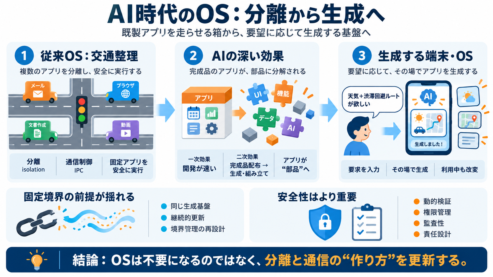

AI Agents Are Becoming Operating Systems: What Developers Must Know in 2026 - Klizo Blog | Klizo Solutions
This changes how software is designed at a foundational level. A traditional application is deterministic. An AI-native …

This changes how software is designed at a foundational level. A traditional application is deterministic. An AI-native …
The evolution of operating systems is shifting from static, user-dependent platforms to dynamic, AI-driven ecosystems. A…
## 1. Foundational Principles and Core Architectures AI-driven operating systems exhibit three convergent trends: embed…
AI-powered Operating Systems build upon traditional architectures by integrating AI tools to enhance user experiences an…
The AIOS becomes the product. This may be one of the largest disruptions in software history. ## What Happens Next? T…